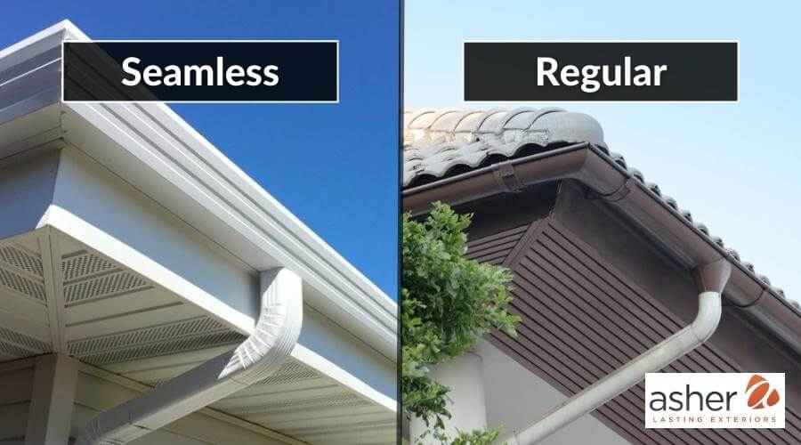
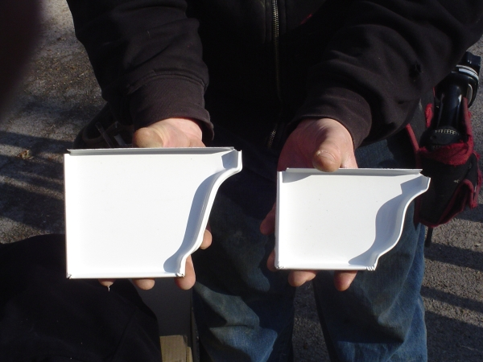

January 15, 2026
Signs Your Gutters Need Repair After DFW Storms
Hail, high wind and heavy spring rain put real stress on a gutter system. Here's what to check after the next storm rolls through.
Read MoreHome / Insights
Insights & guidesPractical, no-nonsense advice on keeping your gutters working through DFW's heat, hail and heavy spring storms.
Hail, high wind and heavy spring rain put real stress on a gutter system. Here's what to check after the next storm rolls through.
Read More
Not all gutters are installed the same way. Here's why seamless has become the standard for most Texas homes.
Read MoreA simple rule of thumb, plus the local factors that might mean you need to clean more often.
Read More
5-inch, 6-inch, or 7-inch? The right size depends on your roof, not a one-size-fits-all default.
Read MoreDallas-Fort Worth gets more than its share of severe weather — hailstorms, straight-line winds, and the kind of heavy spring downpours that can dump inches of rain in under an hour. Gutters take the brunt of it, and damage isn't always obvious from the ground.
After any significant storm, it's worth a quick look (or a call to a professional) before the next round of weather finds the weak spot for you.
If you notice any of these, it's better to have it looked at before the next storm than after. We offer free written assessments — useful both for planning a repair and for insurance documentation.
Traditional (sectional) gutters are manufactured in fixed-length pieces and joined together with seams at each connection point. Every seam is a potential leak point, and over time, sealant at those joints breaks down — especially under DFW's heat and UV exposure.
Seamless gutters are different: they're formed on-site, in one continuous piece, cut to the exact length of each side of your roofline. The only seams are at the corners and downspout connections, which means dramatically fewer places for water to find a way through.
Sectional gutters still have a place — certain tight-access repairs or very small patch jobs sometimes call for it. But for a full installation, seamless is what we recommend and what we install as our standard, in 5", 6" and 7" K-style, half-round and box profiles.
For most Fort Worth-area homes, twice a year — once in late spring after oak and pecan trees finish dropping pollen debris, and again in late fall after leaves come down — is a reasonable baseline.
That said, a few local factors can push that timeline: homes with heavy tree cover or close to greenbelts often need a third cleaning mid-summer, and steeper roofs tend to wash more debris into the gutters at once, which can pack tighter and drain slower.
If staying on top of a cleaning schedule isn't realistic, gutter guards are worth considering — they won't eliminate maintenance entirely, but they stretch the interval significantly and cut down on overflow between visits.
Gutter size is about water volume, not aesthetics. A 5" K-style gutter is the standard for most residential roofs and handles typical DFW rainfall without issue on moderate-pitch, moderate-size roofs.
6" gutters move meaningfully more water and are usually the better call for steep-pitch roofs, larger roof surface areas, or homes that have had overflow problems with a 5" system during heavy storms. 7" gutters are generally reserved for commercial buildings or unusually large roof sections.
The only way to size it correctly is to actually measure your roof's square footage and pitch — which is exactly what happens during a free on-site estimate.
Pricing depends on your home's size, roofline complexity, and the gutter material you choose. Because every job is different, we provide a free, written on-site estimate before any work begins — no ballpark guesses over the phone.
Most residential installs are completed in a single day. Larger homes or custom materials like copper may take a bit longer; we'll give you a clear timeline during your estimate.
6-inch gutters carry significantly more water than 5-inch, which matters on steep or large roofs common in DFW. We'll recommend the right size based on your roof's actual runoff, not a one-size-fits-all default.
Guards don't replace cleaning entirely, but they dramatically reduce how often it's needed and help prevent the clogs that cause overflow during heavy DFW storms.
Yes — Gladiator Gutters is fully licensed and insured, and every installation is backed by a 2-year labor warranty plus manufacturer coverage on materials.
Call us directly or send a message — we're happy to help, no obligation.